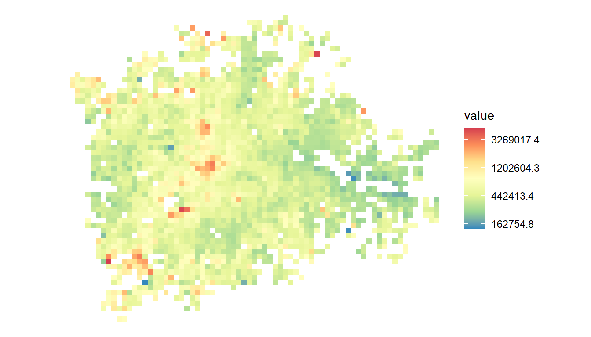

21 A little bit of mapping
In this section, we’ll take a quick look at three different ways to make maps from the housing data:
- The first two use ggplot again, to show two very simple ways it can be used to view geographical data. ggplot can do a lot more, but this is a start.
- Then we’ll introduce a couple of new libraries: the simple features (sf) library and tmap for making maps.
The sf library is relatively new: it’s particularly great because it works excellently with all the *dplyr data wrangling skills you’ve already learned. We’ll run through an example of doing that.
21.1 One simple way to use ggplot for mapping: the 2D geoms
A really simple way to make quick maps is to use ggplot’s 2D geoms. One of these included on the ggplot cheatsheet - geom_bin2d - does a single job: as the help says, if you have two dimensions of continuous data, it:
divides the plane into rectangles, counts the number of cases in each rectangle, and then (by default) maps the number of cases to the rectangle’s fill.
We have exact postcode locations for each sale: these can be our two dimensions. So in practice that means we can easily make a map using this geom that counts how many sales there are in each rectangle. First, let’s re-load the sales data (adding the year column back in) and subset to London:
sales <- readRDS('data/landRegistryPricePaidTopTTWAs.rds')
sales$year <- year(sales$date)
london <- sales %>% filter(ttwa=='London')Then try the new geom, subsetting to a single year:
ggplot(london %>% filter(year == 2018), aes(x = Eastings, y = Northings)) +
geom_bin2d()A map! It could with a few little extras. The next version shows that you can:
- Control the number of bins by defining their dimensions. This geographical data is in British National Grid projection: Easting and Northing units are in metres. So we can make a map with 1km square grid by setting bin width to 1000. As with geom_bar and other bin stats, this is set in the geom itself.
- Pick a colour scale, as we’ve done before - but with one difference: use distiller. This is for continuous variables: it distills continuous values from color brewer’s discrete scales. (You can also add trans = ‘log’ into this function if you want a log fill scale showing the correct values.)
- coord_fixed does what the name suggests: the x and y axis are fixed relative to each other. It’s also possible to set a ratio for the two of them - check the help file.
- theme_void() drops almost all extras from the graph, just leaving the data itself and the guide/legend.
ggplot(london %>% filter(year == 2018), aes(x = Eastings, y = Northings)) +
geom_bin2d(binwidth = c(1000,1000)) +
scale_fill_distiller(palette = 'Spectral') +
coord_fixed() +
theme_void()
But what about things other than count?
What if we want to, say, find the median sale value per square? ggplot has a stat for that - though it’s not listed on the cheatsheet: stat_summary_2d. This gives us total control over what goes into each square. The only extra thing we need to do here:
Provide a z value: this will be the column used in the grid square statistic. So we’ll use price.
stat_summary_2d’s default is to give you the mean, but we can provide any function we like. So here’s the median (and we’re including all the other extras we added to the last one). Note, we’ve only changed three things: the geom used, and adding ‘z = price’ into the aesthetic. We’ve also done as mentioned above: told the fill scale we want a log transformation:
ggplot(london %>% filter(year == 2018), aes(x = Eastings, y = Northings, z = price)) +
stat_summary_2d(fun = median, binwidth = c(1000,1000)) +
scale_fill_distiller(palette = 'Spectral', trans = 'log') +
coord_fixed() +
theme_void()
Try finding the minimum and maximum property value per square (using the min and max functions). This reveals something interesting about the difference in property types in the centre versus the outskirts.
You have a couple of options now: you can skip ahead to the next section if you want to do some proper mapping with actual map data, get to use the simple features package and learn how to wrangle spatial data.
Or the last part of this section just shows quickly how to use the map function from the purrr library (also used in the ‘pulling out multiple values’ section) to get around a problem with using facet (see the facet section).
21.2 Using cowplot to get around the facetting problem
As the section above on facetting shows, ggplot can be used to ‘facet’ produce many sub-plots based on a factor, like property type. However, facets all keep the same colour scale. This can be a problem if e.g. the count of flats and detached houses is very different: each individual map will have its scale compressed and look flat and boring.
One workaround: create a number of individual plots and then combine them. We can do this with the cowplot library. As always, use install.packages if this isn’t already installed.
library(cowplot)This library can be used to very neatly arrange multiple ggplots.
So let’s aim to make a single plot showing the count of each different property type. We can start with the same code we just wrote for getting a count of properties per grid square, except subset to single property types:
flats <- london %>% filter(type == 'F')
flatplot <- ggplot(flats %>% filter(year == 2018), aes(x = Eastings, y = Northings)) +
geom_bin2d(binwidth = c(1000,1000)) +
scale_fill_distiller(palette = 'Spectral') +
coord_fixed() +
theme_void()
flatplot
terraces <- london %>% filter(type == 'T')
terraceplot <- ggplot(terraces %>% filter(year == 2018), aes(x = Eastings, y = Northings)) +
geom_bin2d(binwidth = c(1000,1000)) +
scale_fill_distiller(palette = 'Spectral') +
coord_fixed() +
theme_void()
terraceplotWe can see how cowplot works now just with these two. We can combine multiple plots just by supplying them to plot_grid:
plot_grid(flatplot,terraceplot)But how to avoid having to manually create each plot? There are several options, but here’s a neat one using purrr. All this does:
Uses base R’s split function to split the dataframe into each house type Passes each subgroup to the map function. Note, this is exactly the same ggplot code we just used (except we’re filtering to 2018 in the first line). The only other difference: we’ve replaced the dataframe name with the dot operator. The dot stands in for each of the smaller dataframes that map passes in. Note also the tilde (~): that’s just shorthand for passing into a function.
plots <- london %>%
filter(year == 2018) %>%
split(.$type) %>%
map(
~ggplot(., aes(x = Eastings, y = Northings)) +
geom_bin2d(binwidth = c(1000,1000)) +
scale_fill_distiller(palette = 'Spectral') +
coord_fixed() +
theme_void()
)All that’s done is map each of the plots we were previously doing manually to a list. We could view any of them by looking at the list directly. For example, here’s the first:
plots[[1]]Now that whole list can just be passed directly into cowplot’s plot_grid. (We’re also now telling cowplot the number of rows and columns we want):
plot_grid(plotlist = plots, ncol = 2, nrow = 2)OK, looking good. There are a couple of things it would be nice to do now. See if you can work out how. Some hints:
- We need to label each house type. Using info from the ‘prettifying’ section, can you use ggtitle to add that in? Hint: use the ‘max’ trick, also used in the ‘pulling out multiple model values’ section to get a single value from the type column. There will only be e.g. a single ‘F’ repeated in the flats sub-dataframe, so you can pull that out be e.g. doing this. You just need to use the dot operator instead.
max(flats$type)- Coordinates for each plot are currently different, because ggplot adjusts each to its min and max range. We could do with setting them to be the same. Hint: in the prettifying section, we used coord_cartesian and set the plots xlim values. We can set them here directly in coord_fixed. The limits we’re after are just the minimum and maximum for both eastings and northings. These could be dropped directly into the right place in coord_fixed…
range(london$Eastings)
range(london$Northings)The result should look something like this: